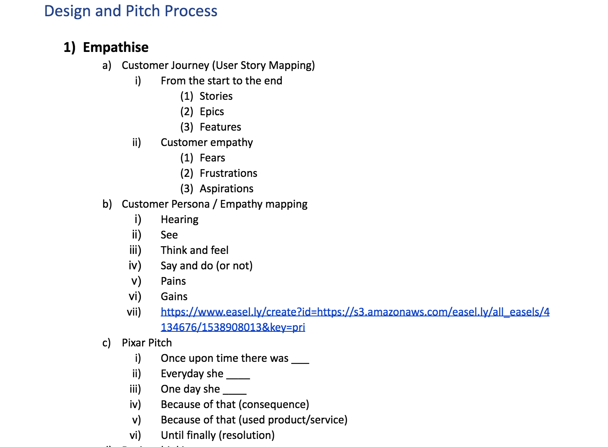
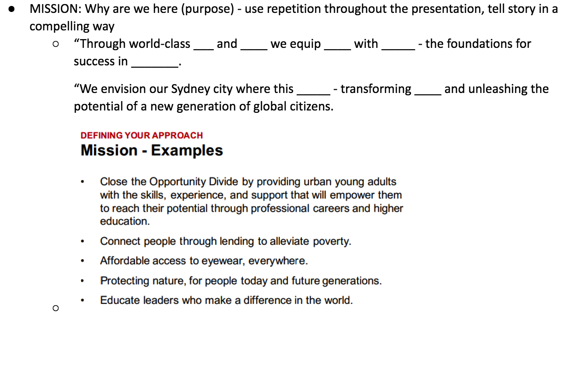
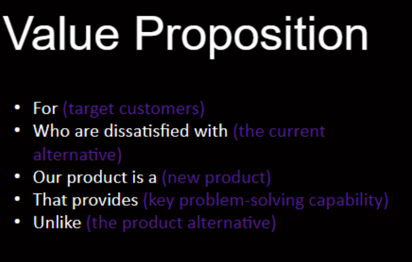
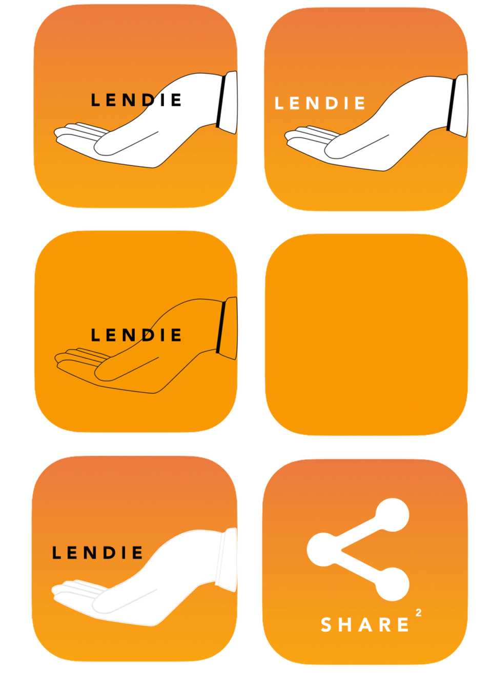

Researcher, Presentation Designer, Graphic Designer, Logo & Branding Designer, Presenter
August 2018
UX/UI
Proto.io, Google Slides, Photoshop
In 2018, I along with a group of friends participated in a Hackathon run by UNSW Women in Technology (UNSW WIT for short) hosted at the Microsoft Office in Sydney. It was an awesome experience because I got to peek into the world of UX/UI design and develop skills in design thinking, innovation, public speaking, pitching and researching. It was amazing opportunity to work together with like-minded people who bring together different perspectives but sharing the same goal.
The theme was liveable cities and the brief was to come up with a solution that would address existing issues within our cities. We ended up achieving third place in the Hackathon with our app Shared². In summary, Shared² is an app that reduces the amount of consumption and waste produced in the modern age by making household items rentable between neighbours. If you're interested in our journey, read on to find out more!
We first planned out our design process and pitch so each team member has a clear idea of the steps involved, the tasks to be completed and team milestones.

Empathise
Customer Journey (User Story Mapping)
Customer Persona / Empathy mapping
Pixar Pitch
Design thinking
Define
Problem Statement
Ideate
Brainstorming
Prototype
Pitch Deck
Speech
Prototype
Validate
Feedback from mentors
Feedback from teams
After individual research and discussion, we outlined key challenges facing society that we deemed relevant and essential. These included:
Responsible production/use/disposal of resources
Air pollution
Natural disasters such as droughts
Drug abuse from a range of demographics including young adults
Attitude towards employment opportunities
Rise of the gig economy and lack of opportunities
Growing rates of poverty among young adults
Obesity and expensive gym memberships
After that we found relevant articles referencing the issues above and divided the articles amongst us. We wrote summary
reports and listed down app ideas that came to us during research. We regrouped together after a set time and shared our
findings and thoughts on the articles with each other.
We also cross-referenced with apps that currently exist in the market and narrowed it down to several ideas
that were viable. As we brainstormed ideas for our digital prototype, we wrote down the pros and cons of each idea as well as any
additional details.
We also wanted to make sure our audience were able to get a holistic overview of our idea so we structured the presentation using the steps below.
1. We defined our mission statement through storytelling in a compelling way.
Here is an example of a mission statement.

2. We summarised our value proposition using this method:

3. We listed our team's personal connection to the mission to build rapport and empathy with the audience.
4. We outlined the opportunities, problems, pain points, visions and touch points associated with the digital prototype.
5. For our solution, we asked ourselves these questions.
Who are the beneficiaries and how will you serve them?
What specifically does your program look like?
How does it differ from what currently exists?
Why is your solution urgent?
What impact will it have?
Is your theory of change based on research?
Is your theory focused on local or systemic change or both?
6. We built a low-fidelity prototype to proof our concept works and display our information architecture.
7. We considered the current market and competition and focused on refining our response to these questions.
What is the current state of the community, industry or issue?
How can you utilise data from reputable sources effectively to support your market analysis?
Is it realistically deployable and scalable?
Which group of customers will you target?
How big is the potential market and how fast is it growing?
Metrics/KPIs?
Who are your competitors?
8. We also looked at competitive landscape and identified the following issues.
What other approaches has been tried and what are their results? Case Studies?
What are the gaps and opportunities?
What has been the experiences of other cities?
What is distinctive about your approach and organisation?
9. We measured and evaluated the feasibility of our prototype.
MILESTONES/FINANCING: How we make it happen?
What technical steps need to be achieved?
What resources do we need: investment, expertise, timeline, budget?
10. We profiled our business/revenue model by looking at financials, cost breakdowns and drivers.
11. We also had to consider the limitations of our digital prototype.
12. We sought to improve our product after resolving the limitations and started looking for validation of the prototype.
13. We then asked for feedback and ended with a memorable tagline with a call to action.
“If you want to learn more, please find us; we’d love to answer your questions.”
14. And finally, our appendix which we included in our slides but took out due to time restraint:
Frameworks used to understand the business/landscape
Our detailed financial analysis
Through numerous iterations, we eventually decided on the final logo of our app. We also sought to brand our design through colour schemes, presentation design and the user interface.
After rigorous reading, researching, brainstorming, planning and designing, our prototype was born! The app helps to reduce the amount of consumption and waste in cities by making household products rentable between neighbours. An example of this is when a user needs to borrow a tent for a one time trip for camping, instead of buying an item for a one time use, the user is able to rent the item from another user on the application. The renters link their credit card to their account and lenders are able to charge the renters on a weekly basis. After the agreed amount of time has elapsed, the lenders are able to continue charging until the item is returned, or report it stolen which will result in money being taken out of the renters account. Lenders and renters are also rated on a credibility system, so this prevents any renters from renting from dishonest lenders and vice versa.
If you have more queries on how we put together our slide deck, please watch the presentation below!